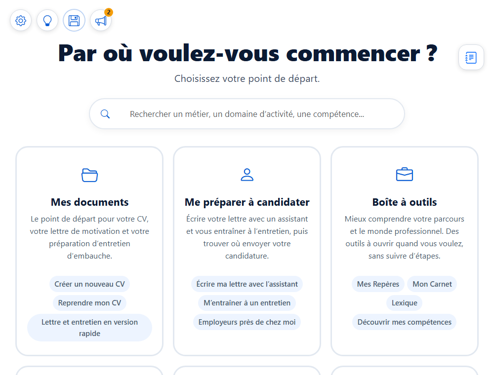
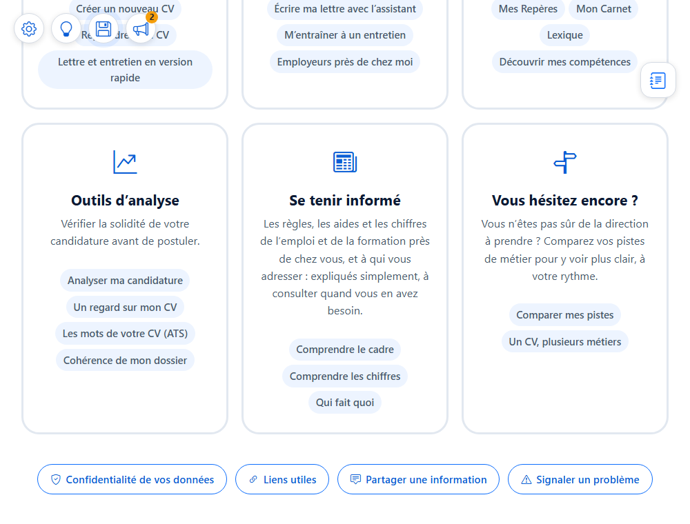
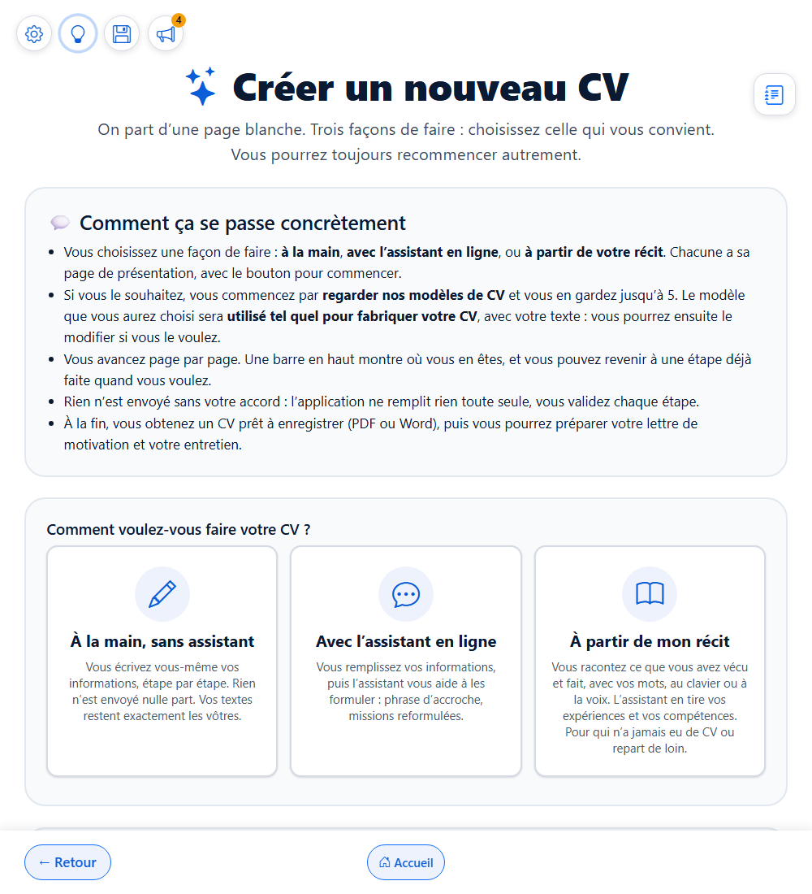
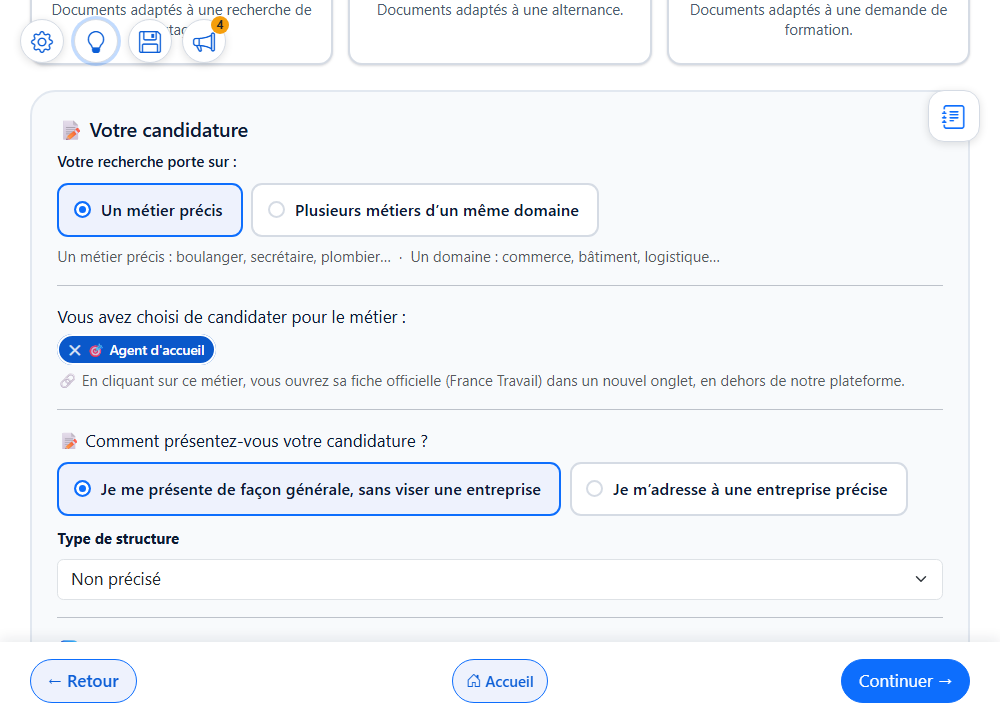
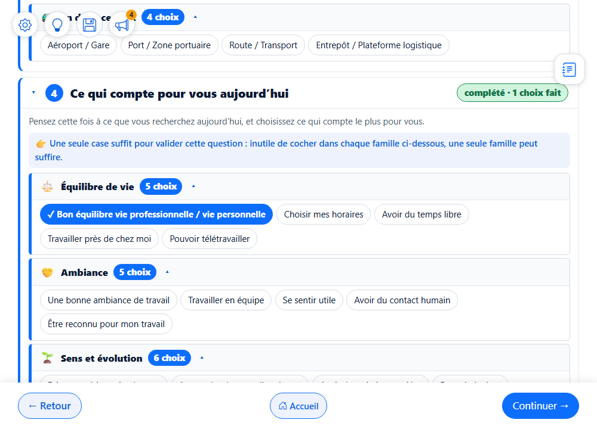
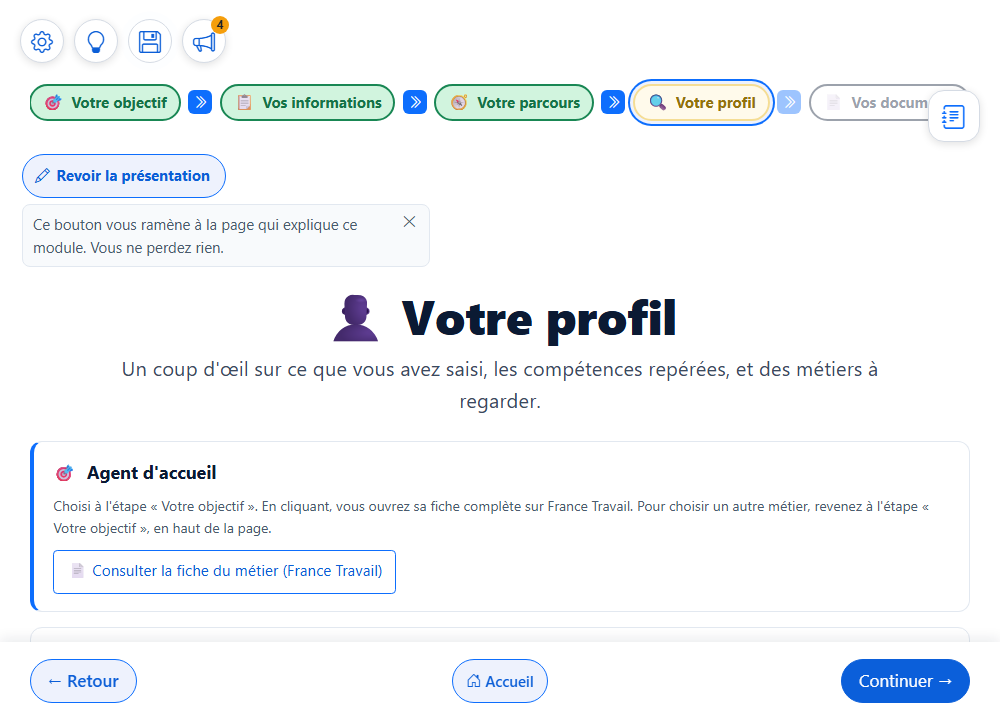
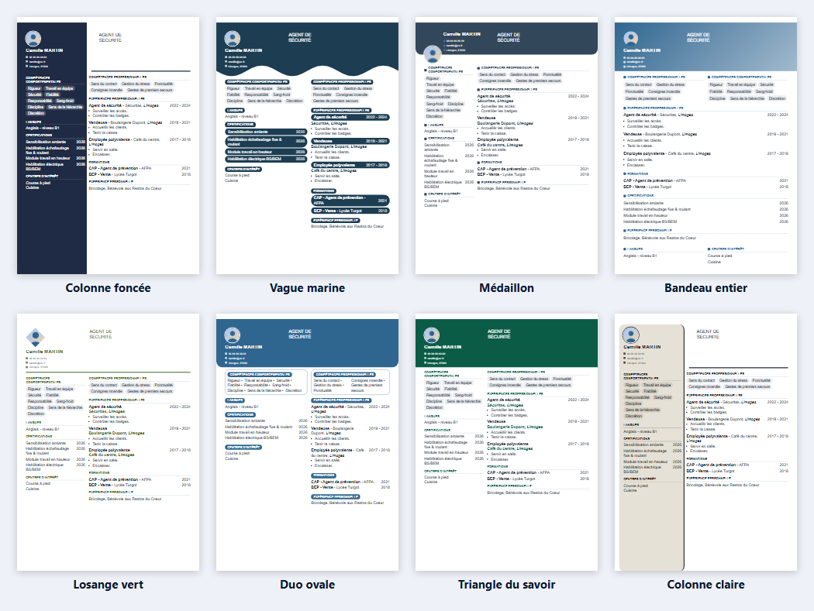
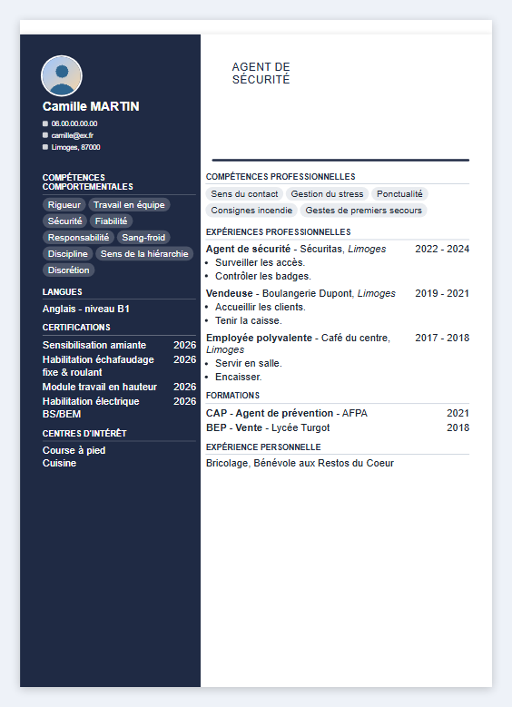
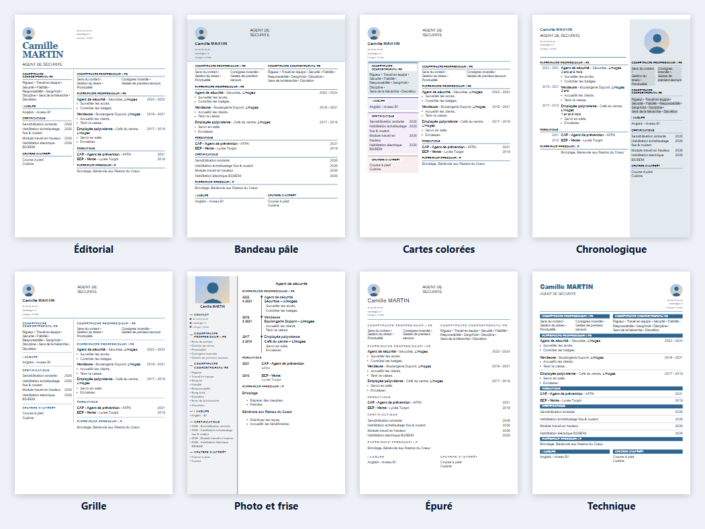

Choisissez votre point de départ.
Le bouton « Introduction » est tout à droite de la ligne du haut, à la même hauteur que les quatre icônes rondes, sans texte d’explication. Il reste visible sur toutes les pages, comme les quatre icônes. Le reste de l’accueil ne change pas.
Cette application, en quelques mots et en images.
Chercher un emploi, ce n’est pas facile, surtout quand on ne se sent pas à l’aise avec l’informatique. Cette application vous accompagne, à votre rythme : personne ne vous juge et rien n’est obligatoire.
APP veut dire « Accompagnement de Parcours Professionnel ». Elle vous aide à avancer : écrire ou améliorer votre CV et votre lettre de motivation, vous entraîner à l’entretien, mieux comprendre le monde du travail, ou simplement réfléchir à la direction à prendre.
Elle vous aide aussi à trouver, près de chez vous, les employeurs à qui écrire et les structures à qui vous adresser, avec leurs coordonnées vérifiées et datées.
Vous choisissez ce qui vous est utile. Rien n’est obligatoire, et vous pouvez vous arrêter et revenir quand vous voulez.


Camille est un personnage inventé, pour l’exemple. Voici ce qu’elle voit à chaque étape. La barre en haut de l’écran vous montre toujours où vous en êtes :
Elle choisit comment commencer. Trois façons de faire, selon qu’elle a déjà un CV ou non.

Elle dit ce qu’elle cherche. Un métier précis, une présentation générale : quelques clics, pas de page blanche.

Elle choisit ce qui compte pour elle. Des propositions déjà prêtes à cocher : elle garde celles qui lui ressemblent.

Elle découvre son profil. Un coup d’œil sur ce qu’elle a saisi, ses compétences repérées et des métiers à regarder.

Votre CV existe en 39 modèles : 13 sobres et 26 créatifs. Vous choisissez les couleurs, les formes et la mise en page. Votre texte, lui, ne change jamais. Vous le téléchargez en PDF ou en Word.



Avec le même personnage inventé, voici deux autres documents que l’application vous aide à préparer. Les réponses de l’assistant en ligne sont des exemples. Cliquez sur une image pour l’agrandir.
Avant de postuler, vous pouvez demander un regard sur votre CV : ce qui est solide, ce qui peut faire hésiter, et des pistes concrètes pour le renforcer.
D’autres outils regardent votre CV avec les yeux d’un recruteur, comparent ses mots à ceux d’une offre, ou vérifient que votre CV, votre lettre et votre entretien racontent la même histoire.
Pour savoir où vous en êtes et à qui vous adresser, l’application met à votre portée des repères sur votre département, expliqués simplement et datés.
Ce que vous écrivez reste sur votre appareil, tant que la page est ouverte. Quand vous fermez ou rechargez la page, tout disparaît : l’application ne garde rien de façon permanente.
Pour retrouver votre travail plus tard, la disquette en haut à gauche l’enregistre dans un fichier, chez vous. Vous choisissez où.
Si vous utilisez un assistant en ligne, c’est vous qui copiez ce qu’il reçoit. Des outils vous permettent de masquer votre nom, votre téléphone et votre e-mail avant de l’envoyer.